All About Beyonce
Beyonce Giselle Knowles - Born September 4th 1981. A Virgo in Houston Texas to Tina and Matthew Knowles; older sister to the artist Solange was born and raised to be a star-literally. Beyonce from early in her childhood was apart of various dance and music classes and groups. At about 9 years old she had joined hr first girl group called "Girls Tyme" in 1990. The group even included who would be futrue members of the Destinys Child. After some adjustments to the groups memebers the group rebranded to Destinys Child . Beyonce was with the group Destinys Child from the late 90s up until she released her first solo project in 2003. Beyonce throughout the years recorded and released 7 solo albums as well as some visual albums and soundrtracks." Beyonces core fanbase identifies as "The BeyHive" a world wide group of fans known to defend her in public, private and for sure online. Beyonces fan base is known to show up to shows "in formation" dressed and ready to sing and dance her iconic moves and lyrics. Beyonce has not only given us Music and Movies but also fashion, with her clothin line "Dereon"; Her fragrance line, which included "Heat"; and Cecred a hair care line she released in 2024. Her mother and father have been influential and apart of her career along the way. Investing in her and allowing her experiences, as well as being her stylist and management team. Her younger sister, Solange, is a talented artist herself. Her Husband is Brooklyn rapper , Jay-Z. The couple married in 2008,not only creating music together but 3 children as well. Currently their first child , Blu Ivy is featured in the movie as a voice actor in The Lion King. Although her family and personal life is kept quiet and a lot of speculation is always made as to whats true or not. One thing that is not for sure is she herself expresses how much she loves them and how important they are to her.
A woman with many accomplisments,talents, awards and fans. A Grammy leader, Music Chart leader, Tour and Fashion Icon.
Photo Gallery

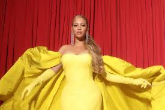
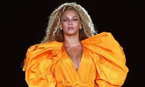
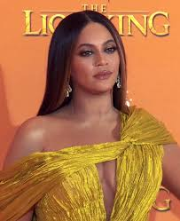
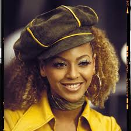
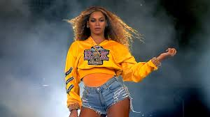
Beyonce Albums
Beyonce has a total of 9 albums as of April 2025. This includes 9 Studio Albums , 5 Live Albums , 1 Soundtrack Album, 3 Compilation Albums and 5 EPs. Starting her career with the group Destinys Child together they released 5 albums togerther as well as remix, extended paly and compilation albums. The groups 5th final album was released in 2004 (with a greatest hits album being released in 2005). Beyonces first solo album was released in 2003 while the group was taking a break. Beyonces first album was successful; debuting at number one she was the first female artist to top singles AND album charts.
Beyonce Tour Facts
Beyonce has been on a total of 7 of her own tours not including one of her first tours in the 2000s with previous group, Destinys Child.
Each tour correlated with her most recent album. These events are known to be themed allowing fans to creatively epress themselves fashionably, as well as buy her merch. Beyonce is known for a BIG show, sets have included aerial hanging, a life size metallic horse, multiple costume and set changes, dancing and singing while in heels.
Below are the Tours Beyonces Been on NOT in order
- Dangerously In Love Tour 2003
- Renaissance World Tour 2023
- The Formation World Tour 2016
- The Mrs.Carter Show World Tour 2013-14
- I AM World Tour 2009-2010
- The Beyonce Experience 2007
- On the Run Tour I and II 2014 and 2018


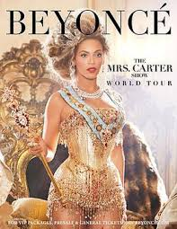
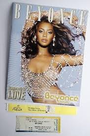
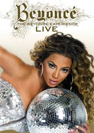
Personal Favorites
My Favorite Song
My Favorite Outfits
My Favorite Eras & Looks
Ego
Lorem, ipsum dolor.
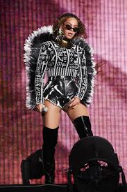
Speechless
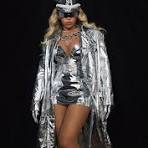
Crazy In Love
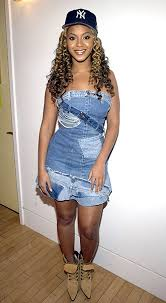
Drunk In Love
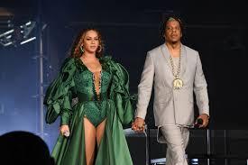